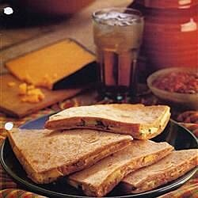

Veggie Quesadillas

Description
Quesadillas are a super quick and easy snack, servable to yourself, or a whole group full of people.
Ingredients
- Cooking Spray
- 1 small zucchini, sliced
- 1 small yellow squash, sliced
- 1 small onion, slivered
- 1 clove garlic, chopped
- 1 can refried beans
- (8x) 8 inch tortillas
- 1/2 cup shredded cheddar cheese
- 2 tsp vegetable oil
- 1 cup salsa
Steps
- Spray skillet. Add zucchini, squash, and onion; cook, stirring occasionally for 5 min. Add garlic. Continue cooking until vegetables are tender.
- Spread a scant 1/4 cup beans over each tortilla. Set 4 tortillas aside to be the tops. Spoon 1/4 vegetable mixture. Sprinkle 2 tbsp cheese over veggies. Cover with reserved tortillas, bean-side down.
- Wipe skillet with paper towel. Heat oil in skillet over low heat. Add 1 quesadilla. Cook until browned and heated through, 2 to 3 min. per side. Repeat with remaining quesadillas. Serve w/ salsa.
Recipes Home